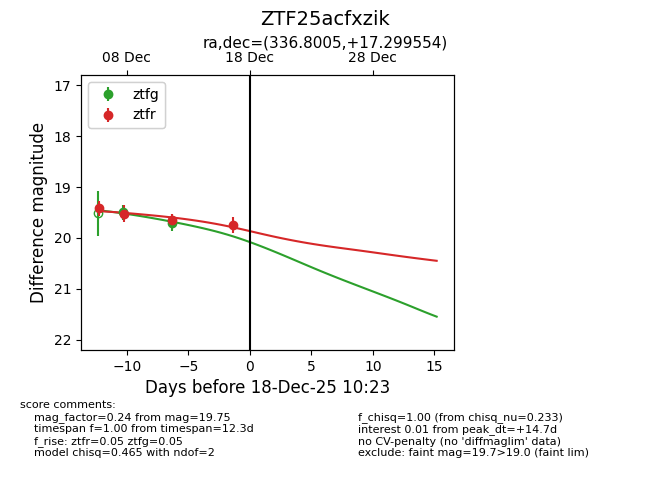
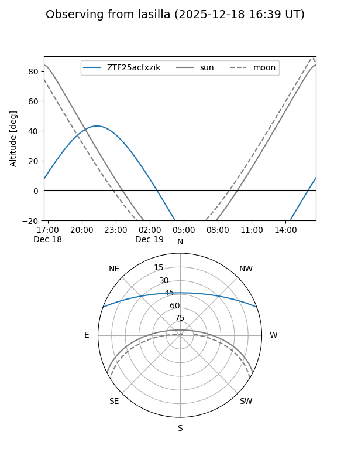
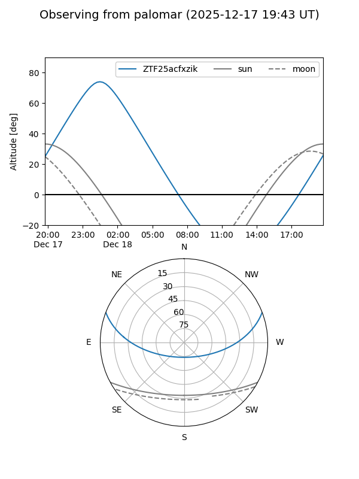

ZTF25acfxzik
Target ZTF25acfxzik at 2025-12-19 04:27
Aliases and brokers:
FINK: fink-portal.org/ZTF25acfxzik
Lasair: lasair-ztf.lsst.ac.uk/objects/ZTF25acfxzik
ALeRCE: alerce.online/object/ZTF25acfxzik
alt names
ZTF25acfxzik (ztf,fink_ztf)
Coordinates:
equatorial (ra, dec) = 336.8005,+17.29952
equatorial (HMS+DMS) = 22:27:12.12,+17:17:58.26
galactic (l, b) = (80.5848,-33.45867)
Flags:
Photometry:
last ztfg=19.97, ztfr=19.75
3 ztfg, 4 ztfr detections
Lightcurve

Visibility


Additional plots